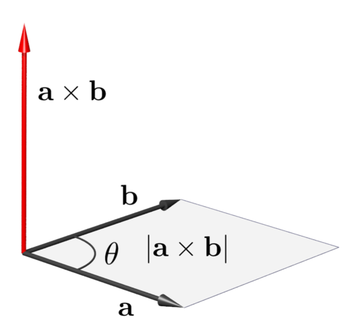
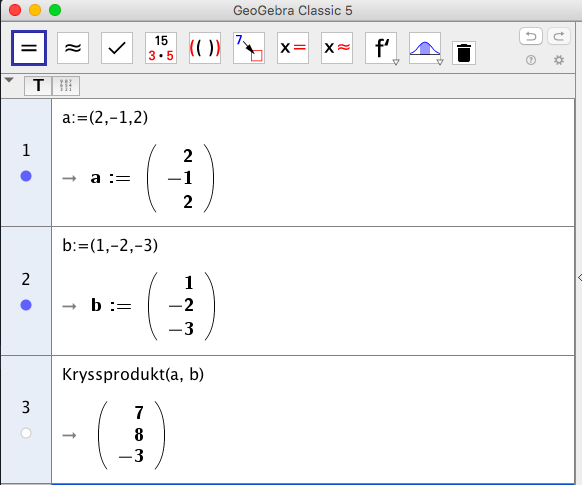
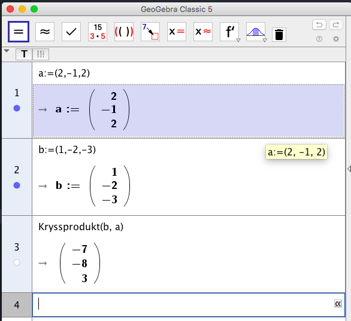
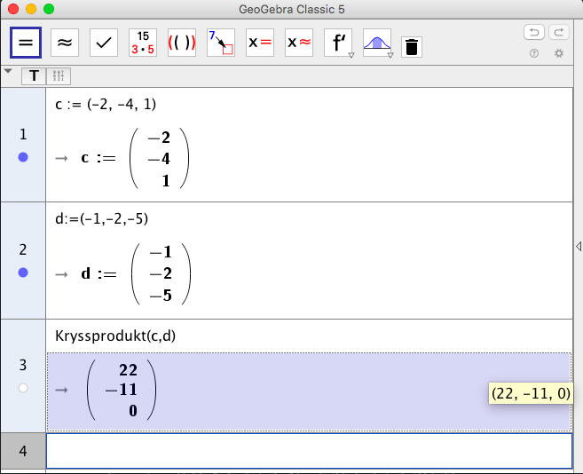
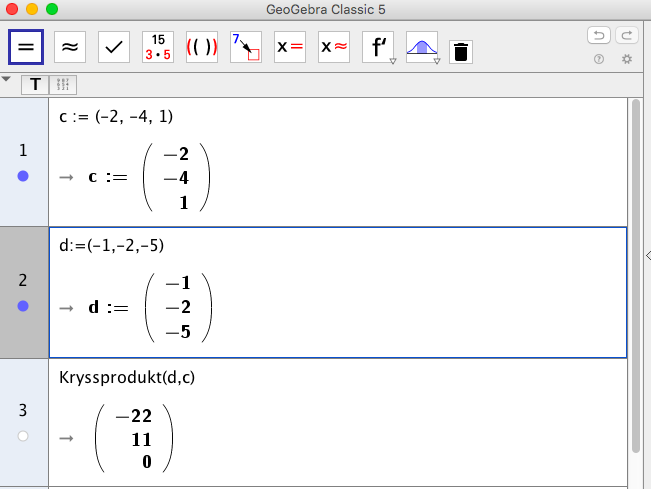
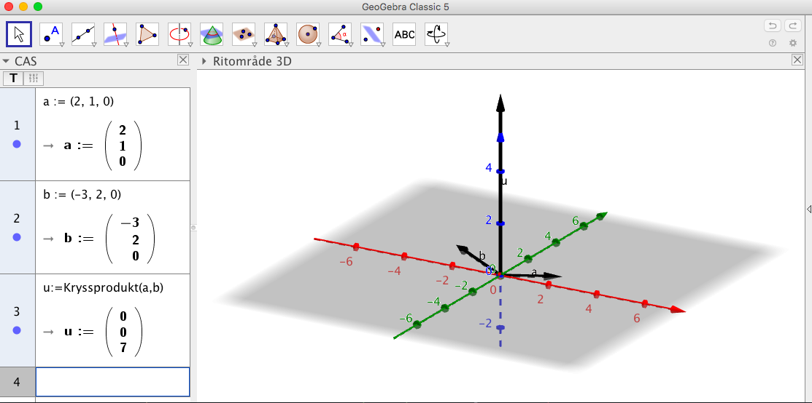
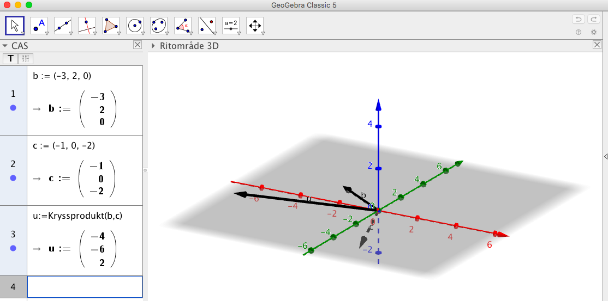

4. Kryssprodukt av vektorer
Tidigare har vi multiplicerat reella tal med vektorer och bildat skalära produkten mellan två vektorer. Till nästa tar vi och jobbar med något som kallas för kryssprodukt. Du kan tänka det som att vi multiplicerar två vektorer med varandra. Kryssprodukten fungerar för vissa rum, 3 och 7 dimensionella. Här jobbar vi med kryssprodukten i 3 dimensioner.
När vi bildar kryssprodukten mellan två tredimensionella vektorer, \( \overline{a} \times \overline{b} \), får vi en ny tredimensionell vektor. Som alla vektorer har kryssproduktsvektorn längd och riktning, och den är vinkelrät mot det plan som vektoerna \( \overline{a} \) och \( \overline{b} \) bildar.

I bilden ovan ger kryssprodukten av \( \overline{a} \times \overline{b} \) storleken av arean för parallellogrammen som bildas.
Kryssprodukten används bland annat i rörelsemängd- och vridmoment och då laddade partiklar färdas i magnetfält.
Kryssprodukten mellan vektorerna \( \overline{a} = a_x\overline{i} + a_y\overline{j} + a_z\overline{j} \) och \( \overline{b} = b_x\overline{i} + b_y\overline{j} + b_z\overline{j} \) är vektors vars determinant är \( \begin{vmatrix} \overline{i} & \overline{j} & \overline{j} \\ a_x & a_y & a_z \\ b_x & b_y & b_z \\ \end{vmatrix} \).
Hur vi bestämmer determinanten kommer fram nedan och i MAOL.
En \( 3 \times 3 \)-determinant bottar sig i en \( 2 \times 2 \)-determinant. Vi börjar med att bestämma en \(2 \times 2\)-determinant. Determinanten för en tvårandig, \(2 \times 2\), är \( \begin{vmatrix} a & b \\ c & d \\ \end{vmatrix} = ad - bc \).
För en trerandig determinant, \(3 \times 3 \), gäller följande: \( \begin{vmatrix} a & b & c \\ d & e & f \\ g & h & i \\ \end{vmatrix} = a \begin{vmatrix} e & f \\ h & i \end{vmatrix} -b \begin{vmatrix} d & f \\ g & i \end{vmatrix} +c \begin{vmatrix} d & e \\ g & h \end{vmatrix} \).
Märk att här finns en logik hur vi väljer värdena. För \( a \) bildar vi determinanten av de värden som inte är under \( a \), motsvarande gäller för \( b \) och \( c \).
Exempel 1 Bestäm kryssprodukten för vektorerna \( \overline{a} = \overline{i} + 3\overline{j} + 2\overline{j} \) och \( \overline{b} = -\overline{i} + 2\overline{j} + \overline{j} \).
Lösning
Vi får
\( \overline{a} \times \overline{b} = \begin{vmatrix} \overline{i} & \overline{j} & \overline{k} \\ 1 & 3 & 2 \\ -1 & 2 & 1 \\ \end{vmatrix} = \overline{i} \begin{vmatrix} 3 & 2 \\ 2 & 1 \end{vmatrix} -\overline{j} \begin{vmatrix} 1 & 2 \\ -1 & 1 \end{vmatrix} +\overline{k} \begin{vmatrix} 1 & 3 \\ -1 & 2 \end{vmatrix} \\ = \overline{i}(3 \cdot 1 -2 \cdot 2) - \overline{j}(1 \cdot 1 -2 \cdot (-1)) + \overline{k}(1 \cdot 2 -3 \cdot (-1)) \\ = -1\overline{i} -3\overline{j} + 5\overline{k} \)
Då vi bilar kryssprodukten mellan två vektor är den tredje vektorn som uppstår vinkelrät mot planet som vektorerna spänner upp.
Vi jobbar med ( \overline{a} = a_x\overline{i} + a_y\overline{j} + a_z\overline{j} \) och \( \overline{b} = b_x\overline{i} + b_y\overline{j} + b_z\overline{j} \). Kryssprodukten är
\( \overline{a} \times \overline{b} = \begin{vmatrix} \overline{i} & \overline{j} & \overline{k} \\ a_x & a_y & a_z \\ b_x & b_y & b_z \\ \end{vmatrix} = \overline{i} \begin{vmatrix} a_y & a_z \\ b_y & b_z \end{vmatrix} -\overline{j} \begin{vmatrix} a_x & a_z \\ b_x & b_z \end{vmatrix} +\overline{k} \begin{vmatrix} a_x & a_y \\ b_x & b_y \end{vmatrix} \\ = \overline{i}(a_y b_z -a_z b_y) - \overline{j}(a_x b_z -a_z b_x) + \overline{k}(a_x b_y -a_y b_x) \\ \)
Som är samma som \( \overline{i}(a_y b_z -a_z b_y) +\overline{j}(-a_x b_z +a_z b_x) + \overline{k}(a_x b_y -a_y b_x) \)
Sedan bildar vi skalära produkten för
\( \begin{array}{rcl} (\overline{a} \times \overline{b}) \cdot \overline{a} & = & (a_y b_z -a_z b_y)a_x +(-a_x b_z +a_z b_x)a_y + (a_x b_y -a_y b_x)a_z \\ & = & a_x a_y b_z -a_x a_z b_y -a_x a_y b_z +a_y a_z b_x + a_x a_z b_y -a_y a_z b_x \\ & = & 0 \\ \end{array} \)
Alltså är vektorerna vinkelräta mot varandra.
Att \( \overline{a} \times \overline{b} \) är vinkelrät mot \( \overline{b} \) kan vi visa på motsvarande sätt.
Exempel 1 Bestäm \( D(x^2-1)^5 \)
Uppgifter
- Bilda följande kryssprodukter för hand och kontrollera din lösning på CAS.
- \( \overline{a} \times \overline{b} \) då \( \overline{a} = 2\overline{i} -\overline{j} +2\overline{k} \) och \( \overline{b} = \overline{i} -2\overline{j} -3\overline{k} \).
Vi får
\( \overline{a} \times \overline{b} = \begin{vmatrix} \overline{i} & \overline{j} & \overline{k} \\ 2 & -1 & 2 \\ 1 & -2 & -3 \\ \end{vmatrix} = \overline{i} \begin{vmatrix} -1 & 2 \\ -2 & -3 \end{vmatrix} -\overline{j} \begin{vmatrix} 2 & 2 \\ 1 & -3 \end{vmatrix} +\overline{k} \begin{vmatrix} 2 & -1 \\ 1 & -2 \end{vmatrix} \\ = \overline{i}(-1 \cdot (-3) -2 \cdot (-2)) - \overline{j}(2 \cdot (-3) -2 \cdot 1) + \overline{k}(2 \cdot (-2) -(-1) \cdot 1) \\ = 7\overline{i} +8\overline{j} -3\overline{k} \)
På GeoGebra

- \( \overline{b} \times \overline{a} \) då \( \overline{a} = 2\overline{i} -\overline{j} +2\overline{k} \) och \( \overline{b} = \overline{i} -2\overline{j} -3\overline{k} \).
Vi får
\( \overline{b} \times \overline{a} = \begin{vmatrix} \overline{i} & \overline{j} & \overline{k} \\ 1 & -2 & -3 \\ 2 & -1 & 2 \\ \end{vmatrix} = \overline{i} \begin{vmatrix} -2 & -3 \\ -1 & 2 \\ \end{vmatrix} -\overline{j} \begin{vmatrix} 1 & -3 \\ 2 & 2 \\ \end{vmatrix} +\overline{k} \begin{vmatrix} 1 & -2 \\ 2 & -1 \\ \end{vmatrix} \\ = \overline{i}(-2 \cdot 2 -(-3) \cdot (-1)) - \overline{j}(1 \cdot 2 -(-3) \cdot 2) + \overline{k}(1 \cdot (-1) -(-2) \cdot 2) \\ = -7\overline{i} -8\overline{j} +3\overline{k} \)
På GeoGebra

- \( \overline{c} \times \overline{d} \) då \( \overline{c} = -2\overline{i} -4\overline{j} +\overline{k} \) och \( \overline{d} = -\overline{i} -2\overline{j} -5\overline{k} \).
Vi får
\( \overline{c} \times \overline{d} = \begin{vmatrix} \overline{i} & \overline{j} & \overline{k} \\ -2 & -4 & 1 \\ -1 & -2 & -5 \\ \end{vmatrix} = \overline{i} \begin{vmatrix} -4 & 1 \\ -2 & -5 \\ \end{vmatrix} -\overline{j} \begin{vmatrix} -2 & 1 \\ -1 & -5 \\ \end{vmatrix} +\overline{k} \begin{vmatrix} -2 & -4 \\ -1 & -2 \\ \end{vmatrix} \\ = \overline{i}(-4 \cdot (-5) -1 \cdot (-2)) - \overline{j}(-2 \cdot (-5) -1 \cdot (-1)) + \overline{k}(-2 \cdot (-2) -(-4) \cdot (-1)) \\ = 22\overline{i} -11\overline{j} \)
På GeoGebra

- \( \overline{d} \times \overline{c} \) då \( \overline{c} = -2\overline{i} -4\overline{j} +\overline{k} \) och \( \overline{d} = -\overline{i} -2\overline{j} -5\overline{k} \).
Vi får
\( \overline{d} \times \overline{c} = \begin{vmatrix} \overline{i} & \overline{j} & \overline{k} \\ -1 & -2 & -5 \\ -2 & -4 & 1 \\ \end{vmatrix} = \overline{i} \begin{vmatrix} -2 & -5 \\ -4 & 1 \\ \end{vmatrix} -\overline{j} \begin{vmatrix} -1 & -5 \\ -2 & 1 \\ \end{vmatrix} +\overline{k} \begin{vmatrix} -1 & -2 \\ -2 & -4 \\ \end{vmatrix} \\ = \overline{i}(-2 \cdot 1 -(-5) \cdot (-4)) - \overline{j}(-1 \cdot 1 -(-5) \cdot (-2)) + \overline{k}(-1 \cdot (-4) -(-2) \cdot (-2)) \\ = -22\overline{i} +11\overline{j} \)
På GeoGebra

- Vad märker du då du bildar \( \overline{a} \times \overline{b} \) och \( \overline{b} \times \overline{a} \) och då du bildar \( \overline{c} \times \overline{d} \) och \( \overline{d} \times \overline{c} \)
Då vi bildar \( \overline{a} \times \overline{b} \) och \( \overline{b} \times \overline{a} \) får de motsatta vektorerna. Samma gäller för \( \overline{c} \times \overline{d} \) och \( \overline{d} \times \overline{c} \).
- \( \overline{a} \times \overline{b} \) då \( \overline{a} = 2\overline{i} -\overline{j} +2\overline{k} \) och \( \overline{b} = \overline{i} -2\overline{j} -3\overline{k} \).
- Låt \( \overline{a} = 2\overline{i}+\overline{j} \), \( \overline{b} = -3\overline{i}+2\overline{j} \) och \( \overline{c} = -\overline{i}-2\overline{k} \). Bilda följande kryssprodukter för hand och rita vektorerna i GeoGebra.
- \( \overline{a} \times \overline{b} \)
Vi får
\( \overline{a} \times \overline{b} = \begin{vmatrix} \overline{i} & \overline{j} & \overline{k} \\ 2 & 1 & 0 \\ -3 & 2 & 0 \\ \end{vmatrix} = \overline{i} \begin{vmatrix} 1 & 0 \\ 2 & 0 \\ \end{vmatrix} -\overline{j} \begin{vmatrix} 2 & 0 \\ -3 & 0 \\ \end{vmatrix} +\overline{k} \begin{vmatrix} 2 & 1 \\ -3 & 2 \\ \end{vmatrix} \\ = \overline{i}(1 \cdot 0 -0 \cdot 2) - \overline{j}(2 \cdot 0 -0 \cdot (-3)) + \overline{k}(2 \cdot 2 -1 \cdot (-3)) \\ = 7\overline{k} \)
På GeoGebra

- \( \overline{a} \times \overline{a} \)
Vi får
\( \overline{a} \times \overline{a} = \begin{vmatrix} \overline{i} & \overline{j} & \overline{k} \\ 2 & 1 & 0 \\ 2 & 1 & 0 \\ \end{vmatrix} = \overline{i} \begin{vmatrix} 1 & 0 \\ 1 & 0 \\ \end{vmatrix} -\overline{j} \begin{vmatrix} 2 & 0 \\ 2 & 0 \\ \end{vmatrix} +\overline{k} \begin{vmatrix} 2 & 1 \\ 2 & 1 \\ \end{vmatrix} \\ = \overline{i}(1 \cdot 0 -0 \cdot 1) - \overline{j}(2 \cdot 0 -0 \cdot 2) + \overline{k}(2 \cdot 2 -1 \cdot 2) \\ = \overline{0} \)
Vi får en nollvektor.
På GeoGebra

- \( \overline{b} \times \overline{c} \)
Vi får
\( \overline{b} \times \overline{c} = \begin{vmatrix} \overline{i} & \overline{j} & \overline{k} \\ -3 & 2 & 0 \\ -1 & 0 & -2 \\ \end{vmatrix} = \overline{i} \begin{vmatrix} 2 & 0 \\ 0 & -2 \\ \end{vmatrix} -\overline{j} \begin{vmatrix} -3 & 0 \\ -1 & -2 \\ \end{vmatrix} +\overline{k} \begin{vmatrix} -3 & 2 \\ -1 & -2 \\ \end{vmatrix} \\ = \overline{i}(2 \cdot (-2) -0 \cdot 0) - \overline{j}(-3 \cdot (-2) -0 \cdot (-1)) + \overline{k}((-3) \cdot (-2) -2 \cdot (-1)) \\ = -4\overline{i} -6\overline{j} +2\overline{k} \)
På GeoGebra

- \( \overline{a} \times \overline{b} \)
- Area av parallellogram
Lösningen
- Area av parallellogram
Lösningen
- Area av parallellogram
Lösningen
- Uppgift med rörelsemängd
Lösningen
- Uppgift med rörelsemängd
Lösningen
- Uppgift med laddad partikel
Lösningen
- Uppgift med laddad partikel
Lösningen
- Lite svårare uppgift
Lösningen
- Lite svårare uppgift
Lösningen
- Lite svårare uppgift
Lösningen
- I teoridelen visade vi att \( \overline{a} \times \overline{b} \) är vinkelrät mot \( \overline{a} \). Visa att \( \overline{a} \times \overline{b} \) är vinkelrät mot \( \overline{b} \).
Lösningen
- Uppgift för jedinivå
Lösningen
- Uppgift för jedinivå
Lösningen
- Uppgift
- Deluppgit a
Lösningen
- Deluppgit b
Lösningen
- Deluppgit c
Lösningen
- Deluppgit a